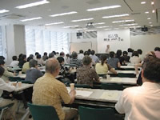

| 【日 時】 |
８月３日(金)10:00～12:00 |
【場 所】 |
全労済埼玉県本部２階会議室 |
| 【参加者数】 |
69人 |
|
|
■学習会
「格差社会 あれこれ」～教育から経済まで～
二宮 厚美氏(神戸大学発達科学部教授)
＜要 旨＞
雇用破壊により雇用格差、賃金格差、所得格差と広がっている。正規社員と非正規社員は３対１の割合。非正規社員は約1,650万人のうち８割が年収200万円以下で働いている。主婦パートなどはずすと約500万人になるだろうと推計されている。
 ワーキングプアの増加、「ネットカフェ難民」の問題がでてきた。憲法25条で最低限度の生活を営む権利が定められているが、働いてもその収入にとどかない。景気が回復してきて完全失業者の数が減っているといわれているが、正規雇用が増えていない。国民の４人に１人は貯蓄ゼロという現状である。
経済の格差で病院にも行けない。また、学力・教育の格差が広がっている。構造改革、「護送船団方式の撤廃」（弱者を守らない）「国内高コスト構造是正」（コスト・人件費を下げる）を合言葉にした政策により、格差を促進し、縮まらなくなった。
| ＜質疑応答＞（○は主な意見・質問、→は答え） |
| ○ |
スウェーデン型の社会構造が理想なのか。 |
| → |
格差社会を是正するものとして福祉国家があるとすれば、スウェーデン型福祉国家は、理想とまでは行かないが日本の将来に有力になる手がかりになる国家像と考える。 |
|